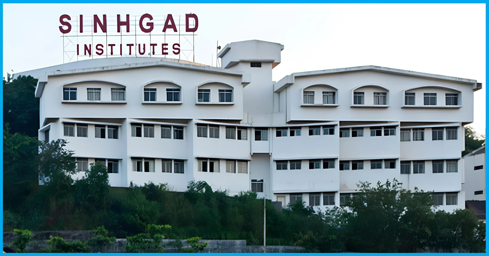

Cloud Infrastructure
AWS compute, storage, IAM basics, networking concepts, and scalable deployment patterns.
I design automation-first infrastructure on AWS, orchestrate container workloads, and streamline CI/CD workflows for reliable, production-ready systems.
Select a tool to explore real-time troubleshooting scenarios, commands, and how I handled production incidents:
Cloud Infrastructure & Scalable Services
Select a real-world scenario to see the full incident response and how I resolved it in production.
I am based in Pune, India and completed my Master of Computer Applications from SPPU. I work at Rabbit and Tortoise Pvt. Ltd., Kharadi as a Jr. CloudOps Engineer, where I deploy and support multiple projects on Linux, AWS, and DevOps tools.
I started as a Linux intern, which helped me build a strong foundation in server administration, deployments, troubleshooting, and production environment basics. Now my focus is cloud operations, CI/CD pipelines, infrastructure support, container workflows, and reliable delivery practices.
AWS compute, storage, IAM basics, networking concepts, and scalable deployment patterns.
Build, test, package, and release workflows using Jenkins, GitHub Actions, and Git.
Linux, shell scripting, logs, monitoring, backups, and incident-aware thinking.
Built an end-to-end DevOps pipeline for a three-tier architecture application by integrating GitHub Actions, Docker Compose, and AWS EC2. Automated application deployment and container orchestration for frontend, backend, and database services.
Deployed a containerized Chai-App on AWS EC2 using Kubernetes, ArgoCD, and NGINX Ingress Controller. Implemented a GitOps workflow for automated application synchronization, continuous deployment, and scalable traffic routing.
Managed and deployed multiple applications on Kubernetes using Docker, Helm, Jenkins, GitLab CI/CD, NGINX Ingress, Prometheus, and Grafana in Linux production environments.
Designed a production-grade CI/CD pipeline using Jenkins, Docker, and Kubernetes on AWS EC2. Provisioned cloud infrastructure with Terraform, implemented GitOps-based deployment with ArgoCD, and set up full-stack monitoring using Prometheus and Grafana with custom alerting dashboards and automated incident notifications.

Sinhgad College of Engineering | SPPU, Pune
Completed with 8.5 CGPA, 2020 - 2024
Kakasaheb Mhaske Junior College
Completed with 75.84% , 2020
Email is the fastest way to reach me. You can also connect through LinkedIn or GitHub.